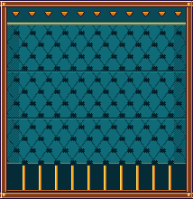
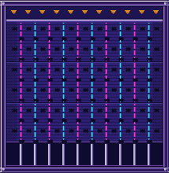
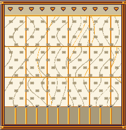
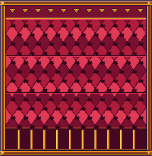

Lluvia de fichas maqueta jugable · v1
Un juego del centro de la Barra, estilo Plinko. La ficha (la doblón del juego, a escala pequeña) cae por 12 filas de clavijas al tresbolillo; cada clavija decide izquierda o derecha 50/50 y las paredes rebotan. Eliges la ficha (2 · 5 · 10), el riesgo (3 tablas de pagos) y la columna de salida (11). La trayectoria se sortea antes con el generador sembrado y la animación solo la enseña. Cada clavija suena (una escala pentatónica que sube con la caída): la caída es una melodía.
1 · La carta en la Barra junto a las tres que ya existen (CSS real del juego) · mesa nueva: petróleo profundo con filo de oro
2 · La mesa elige riesgo, ficha y columna (clic en la tolva, ← →, 1-9) · Espacio / Enter suelta · R cambia de riesgo




3 · Tabla de pagos y RTP exacto calculado por programación dinámica (rtp.cjs) y comprobado enumerando los 4096 caminos
4 · El carrete y las reacciones del crupier nada se repite: 11 presentaciones, 4 decorados y 11 situaciones con 6 frases cada una
5 · Cómo funciona lo que propongo implementar
El flujo
- Elige: riesgo (3), ficha (2/5/10) y columna de salida (11). Las casillas muestran sus multiplicadores y las que no se pueden alcanzar desde esa columna salen apagadas.
- Suelta: "no va más", el crupier lanza la ficha. El resultado ya está decidido (semilla); la caída solo lo enseña.
- Cae: 12 clavijas, cada una una nota; en las paredes rebota; la última fila tiembla.
- Cobra: la ficha se posa en una casilla; nivel 1-2-3 de premio (sonido y temblor crecientes) y la réplica del crupier.
Si se cierra el juego a mitad de la caída, la ficha cuenta como perdida (el crupier "se la guarda").
Sin trucos
Una semilla por ficha → 12 bits (izquierda/derecha) + 1 número para la fracción de moneda. Las presentaciones, los decorados, los destellos falsos, la cámara lenta y las fichas fantasma salen de un azar aparte y no dependen de la casilla, de la ficha, del riesgo ni de la columna.
El premio es ficha × multiplicador. Si hay fracción de moneda (p. ej. 5 × 0,3 = 1,5) se sortea con la misma semilla (50 % cobras 1, 50 % cobras 2): el retorno es exacto para las tres fichas y no hay monedas con decimales.
Documentación completa en NOTAS.md; todas las tablas en tablas.md.